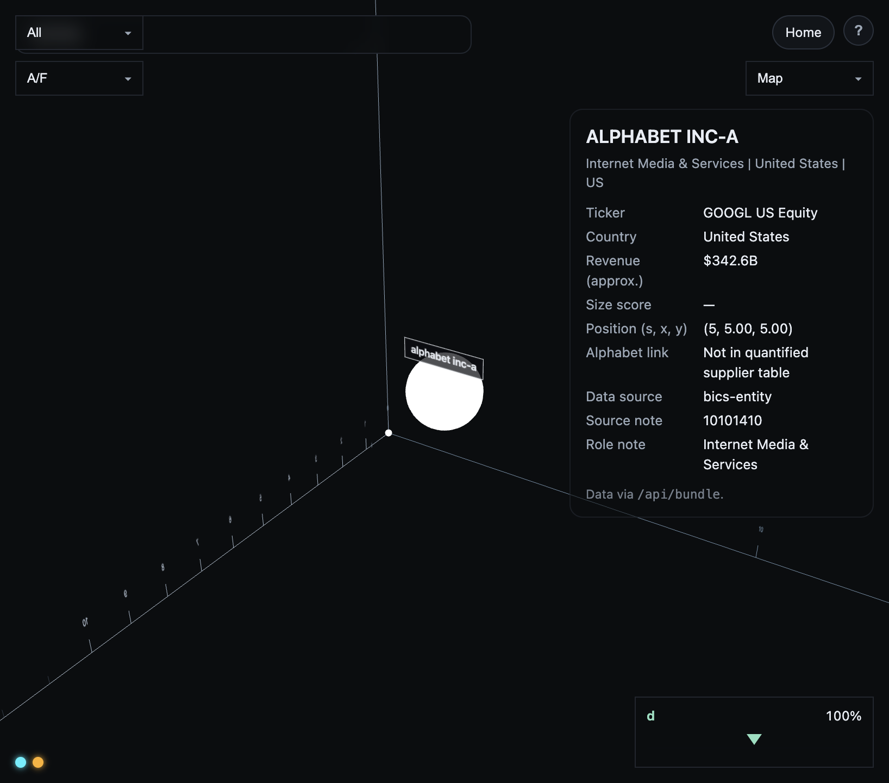
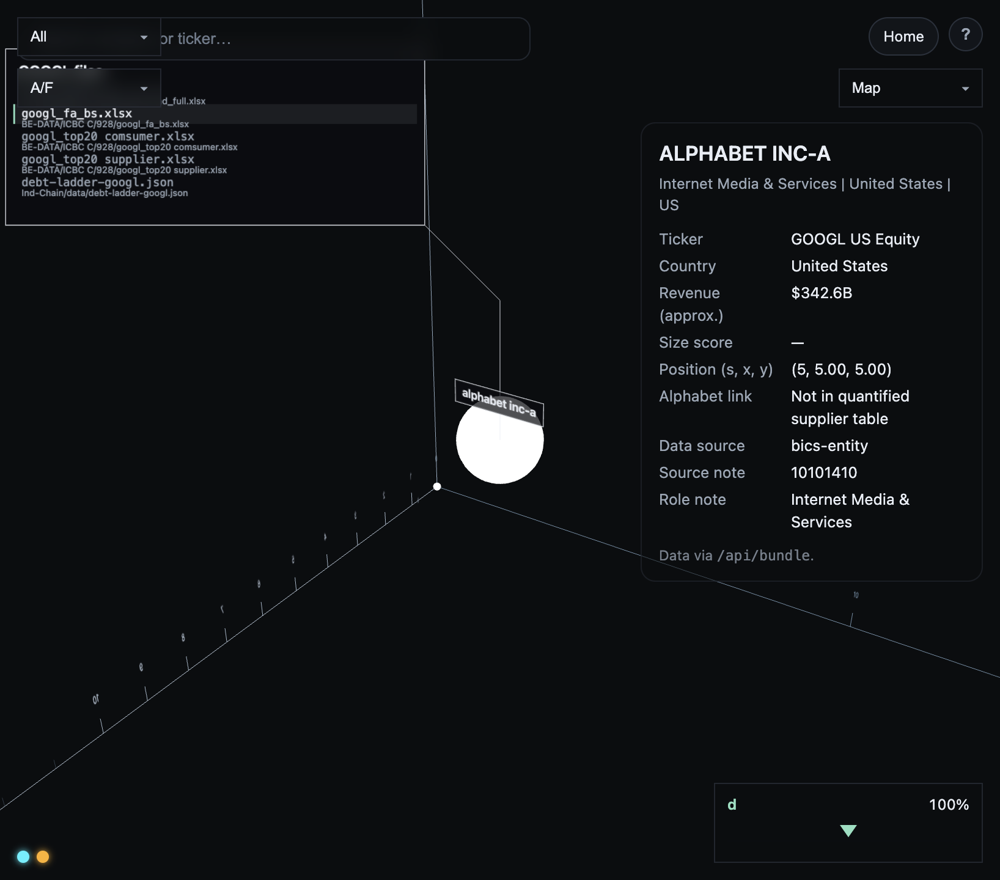
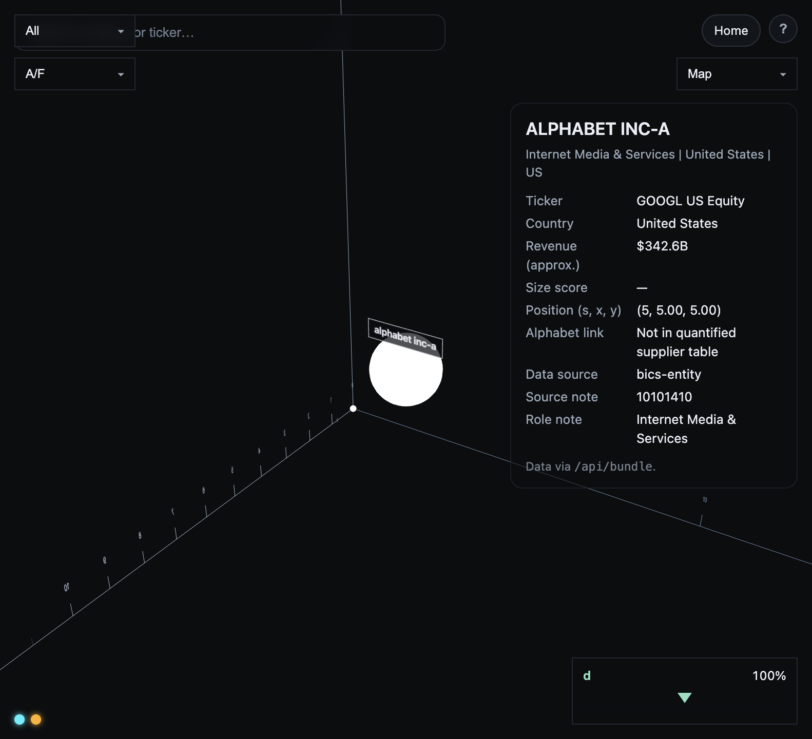
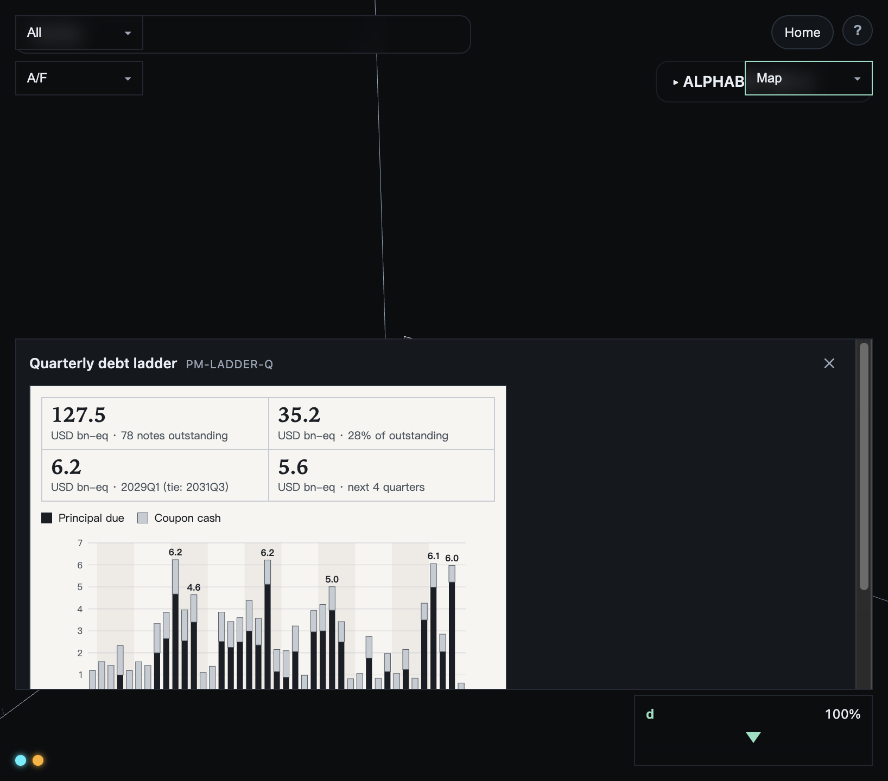
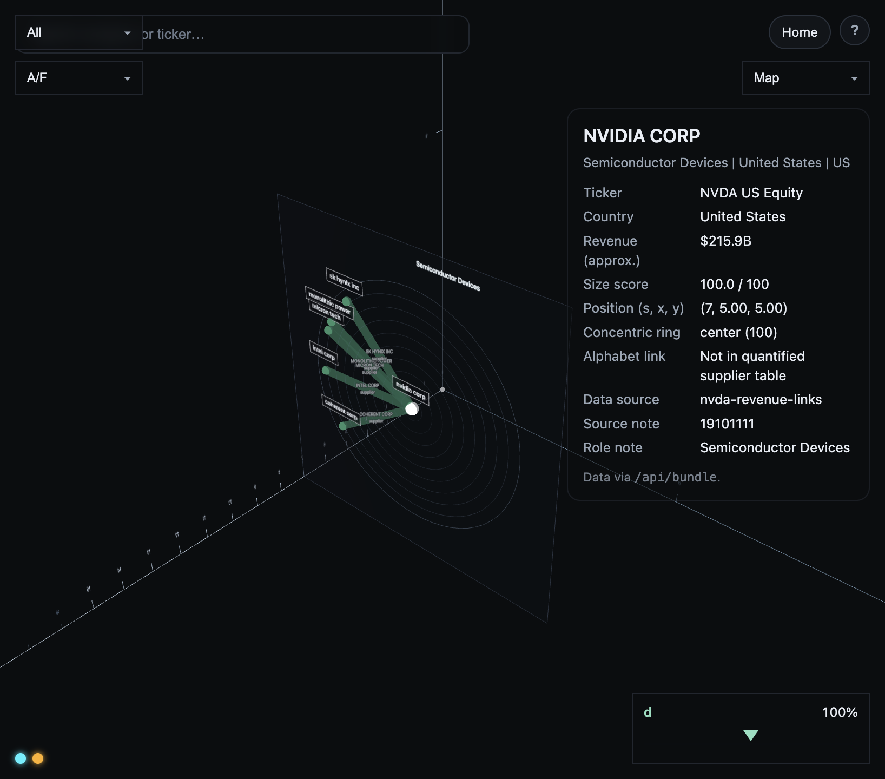
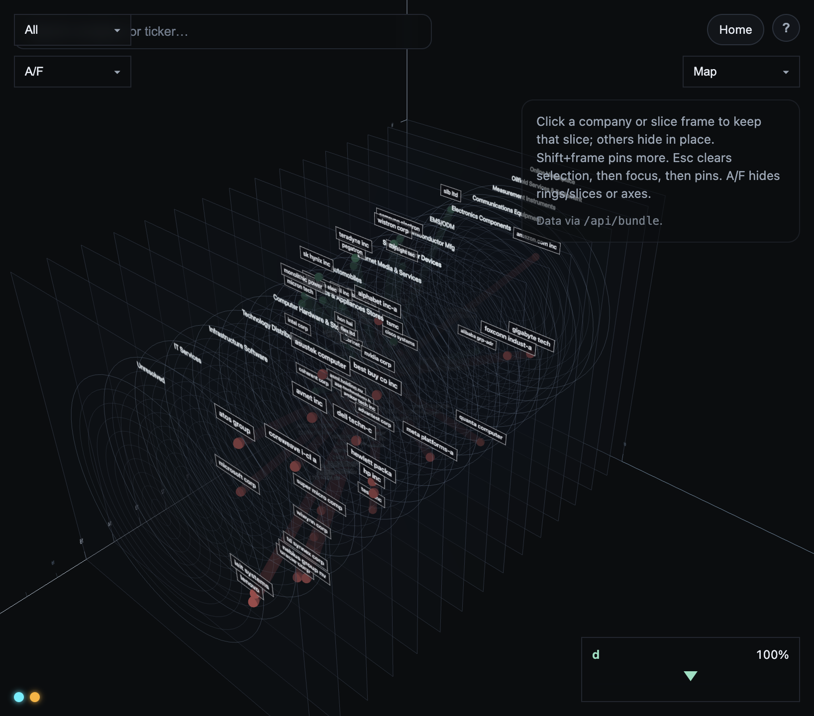
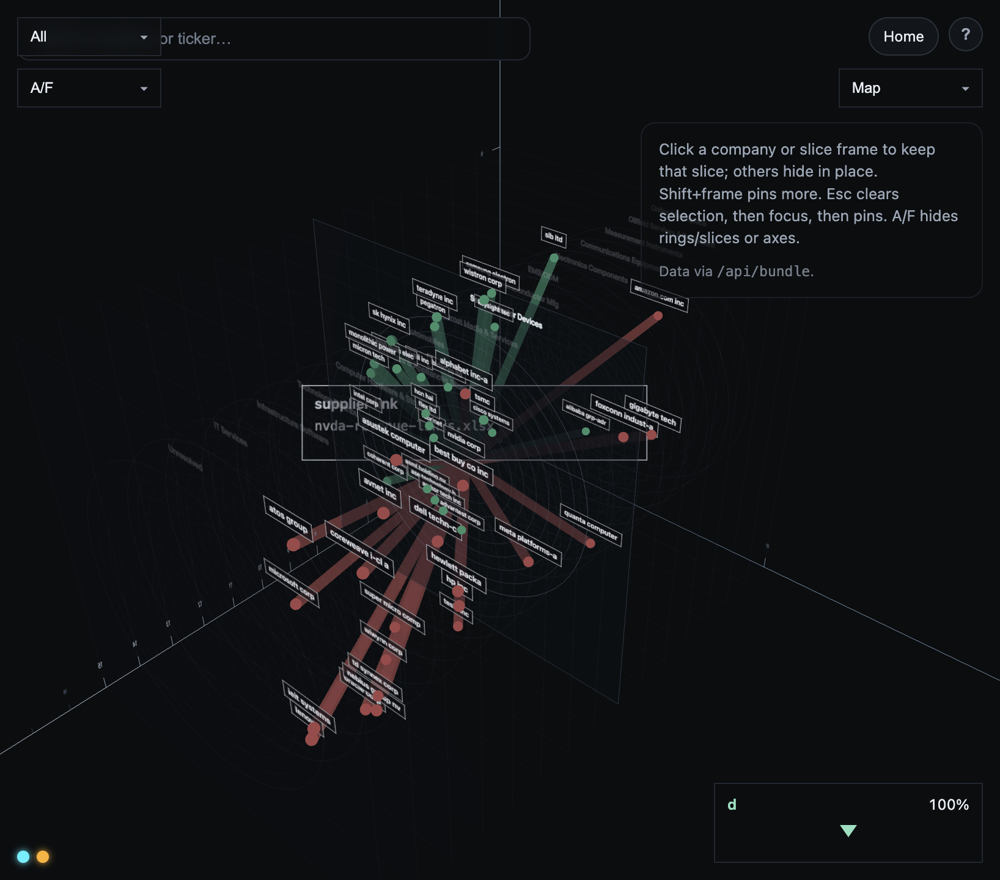
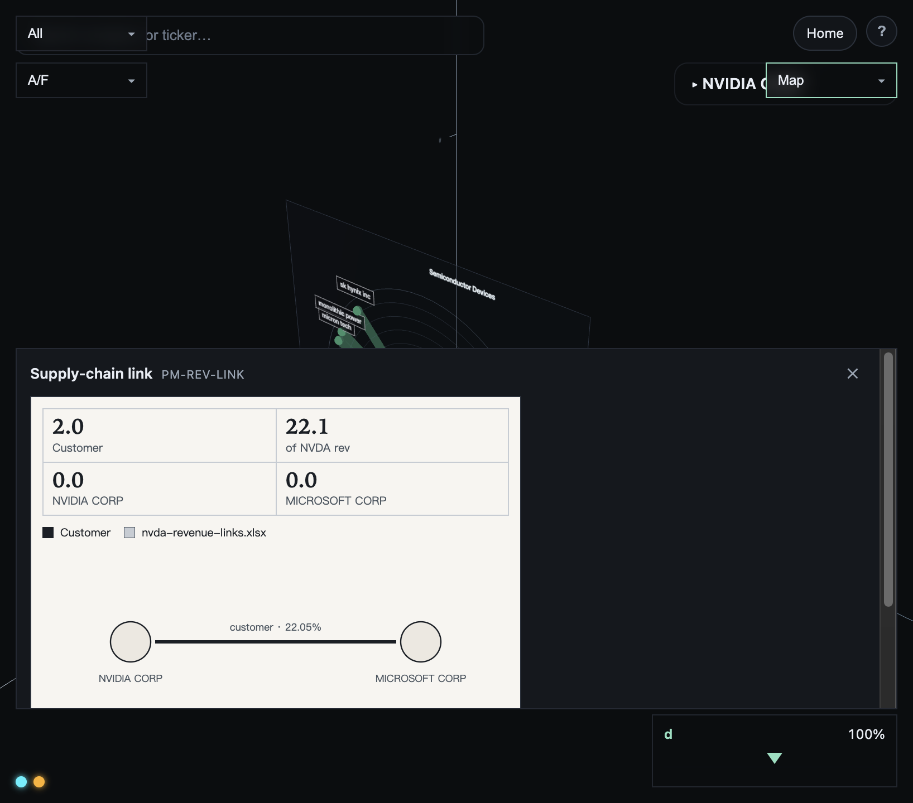
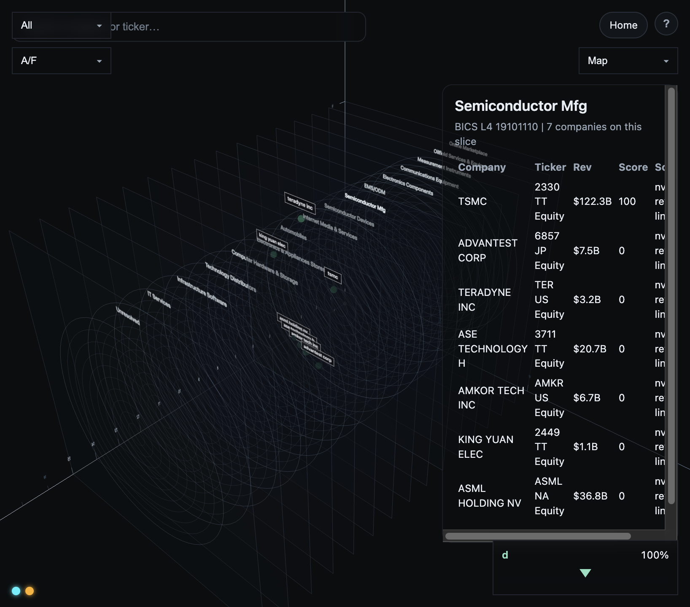

浏览器打开本页 → 打印 → A4 纵向 → 存储为 PDF。关掉页眉网址。
SFC
GOOGL 壳体与 NVDA 收入链 · 计划书 §1.4 与附录备用镜
下列两镜可直接充 SFC-icbc-fintech-proposal.html §1.4「初步演示」占位；其余为功能镜，宜附录或讲稿。
| 计划书 | 推荐镜 | 文件 | 说明 |
|---|---|---|---|
| 图 1-1 | G1 | G1-shell-overview.png |
GOOGL 标准壳体总览 |
| 图 1-2 | N2（主推） | N2-links-full.png |
NVDA 全链；N1 为局部候选 |
| 图 1-3 | — | — | AMAT 本包未提供 |
| ID | 计划槽 | 功能介绍 |
|---|---|---|
| G1 | 图 1-1 | GOOGL 标准壳体：一家公司落在用户坐标，白球为公司点，上方暗玻璃小写名牌 |
| G2 | 功能镜 | 悬停文件卡：仅悬停显示，列出本机 GOOGL 相关数据文件（xlsx / debt-ladder） |
| G3 | 功能镜 | 名牌与悬停卡分离：选中≠悬停，避免误读 |
| G4 | 功能镜 / Map | 第二重映射 PM-LADDER-Q：季度偿债压力纸面（聚合，无单券明细） |
| N1 | 图 1-2 候选 | NVDA 链局部：中心白球 + 供方绿球与粗绿收入线 |
| N2 | 图 1-2 主推 | NVDA 全链：多 BICS-L4 切片，白/绿/红三色球与红绿粗线 |
| N3 | 功能镜 | 收入线悬停：来源文件卡（nvda-revenue-links.xlsx 路径展示） |
| N4 | 功能镜 / Map | 选线 → Map PM-REV-LINK 关系纸面（NVIDIA–Microsoft · customer · 22.05%） |
| N5 | 功能镜 | 切片聚焦：留下当前 BICS L4，名单就地可读 |









Staging 副本：cabinet/notes/icbc-demo-stills/raw/。
插入 SFC-icbc-fintech-proposal.html §1.4 图位另令或下轮；本页只积累素材。
AMAT（图 1-3）未提供。